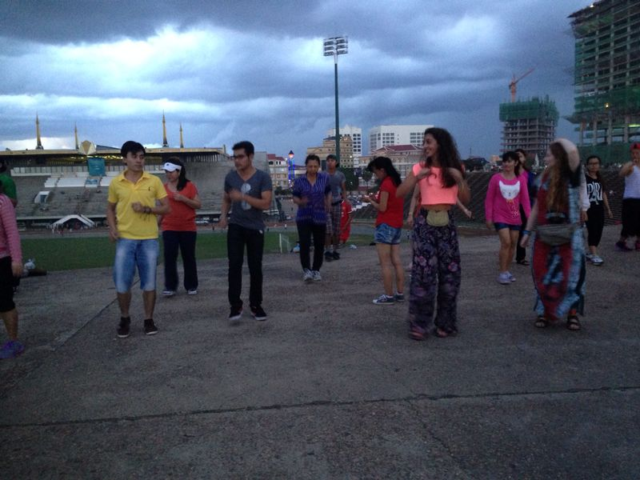
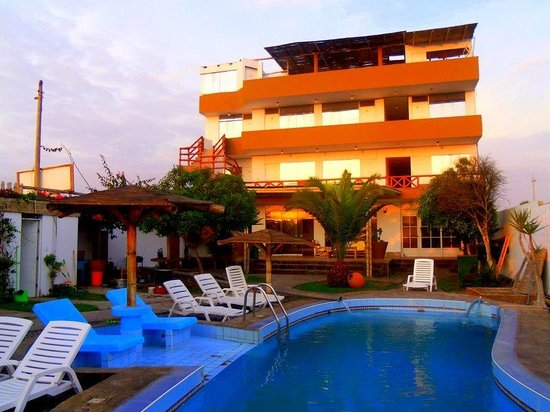
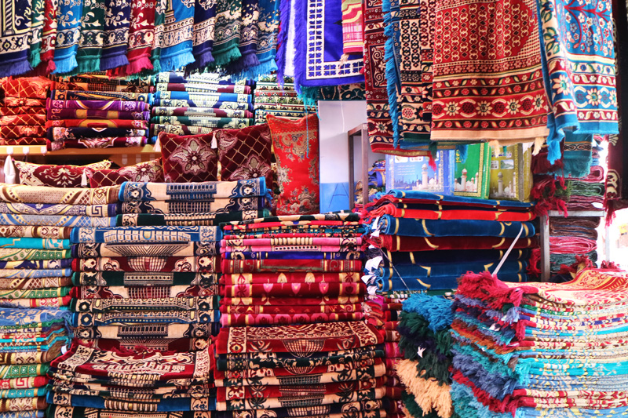
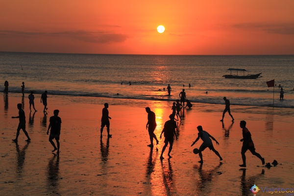

Motivos para você viajar pela Àsia.
A Ásia é um prato cheio para os amantes de fotografia. Suas belezas naturais e históricas encantam qualquer turista.
Cultura e história
A Ásia tem um património cultural riquíssimo. Em cada esquina, esconde-se mais um templo, mais um bocado da sua história. A sua cultura é tão diferente da nossa que acaba por nos cativar aquele choque cultural.
Povo acolhedor
A simpatia não é forçada e o sorriso 24h por dia para os turistas está garantido. É um povo que sabe que vive dos viajantes e, por isso mesmo, são acolhedores e atenciosos connosco. Qualquer um está disposto a ajudar e a curiosidade é-lhes inerente.

Beleza natural
Ninguém consegue ficar indiferente à beleza natural destes países. As praias da Tailândia, as montanhas do Nepal e as Cascatas do Laos são só alguns exemplos do que a natureza fez de melhor no continente asiático
Gastronomia
No Oriente, o melhor sítio para comer é mesmo na rua, nos mercados locais. É lá que podes experimentar os melhores noodles, os melhores fried rice e, para os mais corajosos, os insetos e os bichos estranhos que não são habituais na Europa. Aqui, a gastronomia tem um sabor especial e não conseguimos senti-lo nos restaurantes asiáticos em Portugal.

Vida barata
Come por 3 dólares, dorme por 5 e viaja por 8 para o outro lado do país. Se não for muito exigente, a vida na Ásia é mesmo muito barata, e isso leva a que os jovens consigam viajar por aqueles países durante algumas semanas, sem grande esforço. O truque é fugir de tudo o que é mais turístico e integrares-te na cultura deles.

Mundo backpacker
Para qualquer lado que vá, é certo que vais encontrar imensos jovens de mochila às costas, principalmente no Sudeste Asiático. A vida é barata, o ambiente é descontraído e há muita festa e animação. O que é que um backpacker pode pedir mais?
Compras
É fácil perder a cabeça nos mercados. Coisas giras e diferentes que decoram qualquer casa, qualquer pescoço e que dão óptimas prendas para a família e amigos. Se gostas de coisas diferentes e que ninguém terá, encontraste os locais ideais para encontrar. O único truque aqui é regatear.

Clima
Em geral, está sempre bom tempo. Claro que o continente é gigante mas, se generalizarmos, na maioria dos países só há duas épocas: a época seca e a época chuvosa. Tanto numa como noutra, há calor e bom tempo, o que leva os viajantes a puderem andar à vontade nas praias e nos templos. Mas atenção, se fores na época chuvosa não dispenses do guarda-chuva, porque será garantido teres pelo menos 2h por dia de chuva intensa.

COMENTÁRIOS
Adorei!! Irei para a Àsia em breve!
Muito top, as dicas estão otimas, não era de se imaginar que a Àsia era tão interessante assim!.